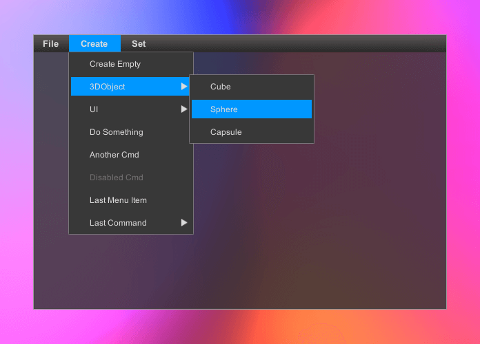
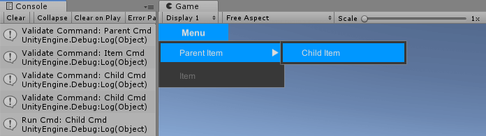
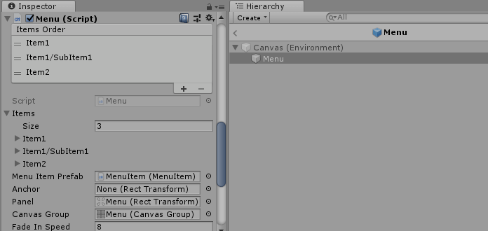
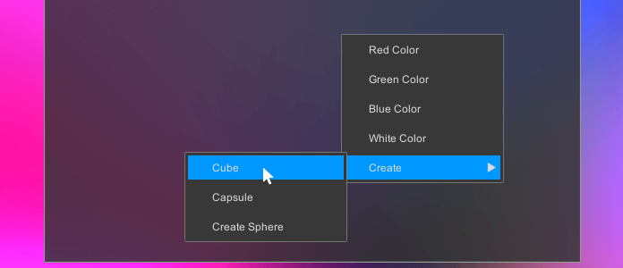

#Menu Control Docs ##Overview The Menu control allows hierarchal organization of elements associated with commands. It can be used to implement main and context menu of an application.

##Getting Started
Create Canvas
Add MenuButton.prefab from /Battlehub/RTEditor/Content/Runtime/UIControls/Menu/
Prefabs to hierarchy.Add Menu.prefab from /Battlehub/RTEditor/Content/Runtime/UIControls/Menu/Prefabs to hierarchy
Set
Menufield of the Menu Button:
Create Empty Game Object and name it Command Handler
Create MenuCmdHandler script and add it to the Command Handler:
using UnityEngine; using Battlehub.UIControls.MenuControl; public class MenuCmdHandler : MonoBehaviour { public void OnValidateCmd(MenuItemValidationArgs args) { Debug.Log("Validate Command: " + args.Command); if(args.Command == "Item Cmd") { args.IsValid = false; } } public void OnCmd(string cmd) { Debug.Log("Run Cmd: " + cmd); } }Set
ActionandValidateevent handlers of each entry inItemsarray of the Menu:
Hit Play, open the Menu and click Child Item. You should see following output:

##Menu Item Structure:

Prefab: /Battlehub/RTEditor/Content/Runtime/UIControls/Menu/Prefabs/MenuItem.prefab
Script: /Battlehub/RTEditor/Runtime/UIControls/Menu/MenuItem.cs
Fields:
Selection Color- highlighted color.Text Color- text color.Disabled Selection Color- highlighted color of disabled menu item.Disabled Text Color- text color of disabled menu item.Icon- image.Text- text.Expander- image visible if menu item has sub-menu.Selection- image visible when pointer is over menu item.
##Menu
Structure:

Prefab: /Battlehub/RTEditor/Content/Runtime/UIControls/Menu/Prefabs/Menu.prefab
Script: /Battlehub/RTEditor/Runtime/UIControls/Menu/Menu.cs
Fields:
Items- array of Menu Item Info.Menu Item Prefab- reference to menu item prefab.Anchor- opened menu will be aligned with anchor.Panel- parent of menu items.Canvas Group- required to "fade-in" menu.Fade in speed- how much the alpha property changes per second.
[Serializable]
public class MenuItemInfo
{
public string Path; //path to menu item e.g. Create/3DObject/Cube
public string Text; //menu item text
public Sprite Icon; //menu item icon
public string Command; //argument passed to Action event handler and Validate event handler
public MenuItemEvent Action; //raised when menu item clicked
public MenuItemValidationEvent Validate; //event raised when menu opened
}
##Main Menu Button
This button can be used to open menu. It has three states: normal, pointer over and focused. The transition to the focused state occurs when the menu is opened. The transition to the normal state occurs when the menu is closed.
Prefab: /Battlehub/RTEditor/Content/Runtime/UIControls/Menu/Prefabs/MenuButton.prefab
Script: /Battlehub/RTEditor/Runtime/UIControls/Menu/MenuButton.cs
##Context Menu Trigger
This script opens the menu when you click the right mouse button.

Script: Assets/Battelhub/UIControls/Menu/Scripts/СontextMenuTrigger.cs